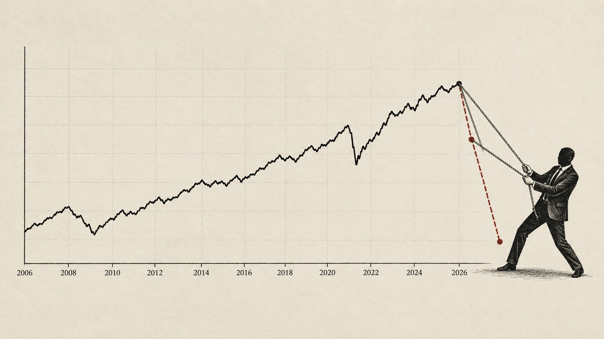

La regla fiscal chilena lleva más de dos décadas funcionando, y eso la convierte en algo poco común: un experimento natural que nos deja ver cuánto, y sobre todo por qué, las cuentas públicas terminan apartándose de lo que el gobierno prometió. Reconstruimos la serie oficial del Consejo Fiscal Autónomo entre 2006 y 2025 y separamos tres ideas que el debate mezcla todo el tiempo: la meta (la promesa que se fija al armar el presupuesto), el resultado efectivo (lo que de verdad pasó, con el cobre y la economía empujando para un lado o para el otro) y el error de cálculo (que solo existe cuando el año ya cerró y se puede comparar lo prometido con lo ocurrido). De esa reconstrucción salen tres hechos incómodos para la acusación: el mayor desvío de toda la serie no es el de 2025 ni el proyectado para 2026, sino el de 2021, en plena pandemia, con un ministro que nunca fue acusado; el desvío real de 2009 fue mayor que la cifra que hoy se le proyecta a 2026; y ninguno de esos episodios, ni siquiera el más grave de todos, terminó en acusación constitucional. La conclusión es simple: tratar como infracción a la Constitución la proyección de un año que todavía no termina es confundir una revisión de pronóstico con un error comprobado.

1. Por qué meta, efectivo y error no son lo mismo
El balance fiscal admite tres lecturas que no deben confundirse. La meta de Balance Estructural es el objetivo que el Ejecutivo se fija al construir el presupuesto. Es una promesa, no un pronóstico. El balance efectivo es lo que finalmente ocurre, e incorpora el efecto del ciclo económico, en especial el precio del cobre, que la regla denomina ajuste cíclico. El error de cálculo es algo distinto de ambos: es la distancia entre lo que se proyectó para un año y lo que ese año realmente cerró.
El desvío que solemos graficar, definido como balance estructural efectivo menos meta, mide cuánto se alejó el resultado de la promesa. No mide cuánto se equivocó alguien al calcular. Dentro de ese desvío conviven el error de proyección, las decisiones de gastar más de lo planificado, el efecto del ajuste cíclico y la propia metodología de la regla. El error de cálculo es solo uno de esos componentes.
La distinción tiene una consecuencia formal decisiva. El error de un pronóstico solo se define contra su realización:
error e_t = Realizado_t − Proyectado_t // exige que el año t ya haya cerrado
revisión r = Proyección_nueva − Proyección_vieja // solo compara dos pronósticosUna revisión entre dos proyecciones no es un error. Es una corrección normal de pronóstico. Tratar una revisión como si fuera un error verificado constituye un error de categoría, y ese es el punto donde la discusión técnica se vuelve relevante para la discusión constitucional.
2. Reconstrucción de la serie 2006 a 2025
La Tabla 1 reconstruye, a partir de la base del Consejo Fiscal Autónomo1, la meta y el resultado estructural efectivo de cada año, junto con el desvío y el ajuste cíclico. El ajuste cíclico es el margen que el ciclo del cobre y de la actividad suma o resta al resultado de cada ejercicio: cuando es positivo, el cobre o la economía vinieron a favor; cuando es negativo, vinieron en contra.
| Año | Meta BE | BE efectivo | Desvío | Ajuste cíclico | Evento |
|---|---|---|---|---|---|
| 2006 | +1,0 | +1,4 | +0,4 | +6,0 | |
| 2007 | +1,0 | +1,1 | +0,1 | +6,7 | |
| 2008 | +0,5 | −1,0 | −1,5 | +4,9 | Inicio crisis financiera global |
| 2009 | +0,5 | −3,1 | −3,6 | −1,3 | Crisis financiera global |
| 2010 | 0,0 | −2,1 | −2,1 | +1,6 | Terremoto del Maule |
| 2011 | −1,8 | −1,0 | +0,8 | +2,3 | |
| 2012 | −1,5 | −0,4 | +1,1 | +1,0 | |
| 2013 | −1,0 | −0,5 | +0,5 | −0,1 | |
| 2014 | −1,0 | −0,5 | +0,5 | −1,1 | |
| 2015 | −1,1 | +0,5 | +1,6 | −2,7 | |
| 2016 | −1,3 | −1,1 | +0,2 | −1,6 | |
| 2017 | −1,5 | −2,0 | −0,5 | −0,8 | |
| 2018 | −1,5 | −1,4 | +0,1 | −0,3 | |
| 2019 | −1,6 | −1,4 | +0,2 | −1,5 | Estallido social |
| 2020 | −1,4 | −2,7 | −1,3 | −4,6 | Pandemia Covid-19 |
| 2021 | −4,7 | −10,6 | −5,9 | +2,9 | Pandemia: IFE y retiros |
| 2022 | −3,9 | +0,5 | +4,4 | +0,6 | Ajuste post pandemia |
| 2023 | −2,1 | −2,7 | −0,6 | +0,3 | |
| 2024 | −1,9 | −3,3 | −1,4 | +0,4 | |
| 2025 | −1,6 | −3,7 | −2,1 | +0,9 | Cierre, gestión Grau |
| 2026* | −1,1 | −3,7 | −2,6 | +1,3 | Proyección IFP 1T26 |
El dato menos intuitivo aparece en 2025. El ajuste cíclico es positivo, de modo que el cobre por sobre su precio de referencia maquilla el balance efectivo y agrava el estructural. La Dirección de Presupuestos reconoció que cerca del 89 por ciento de la diferencia entre el resultado efectivo y el estructural de 2025 proviene del ajuste cíclico del cobre, y planteó la necesidad de revisar ese parámetro de la regla2. Parte del llamado déficit estructural récord es, por tanto, un artefacto del supuesto de precio del cobre.
3. Los grandes desvíos y su evento condicionante
Si nos quedamos solo con los años en que el desvío respecto de la meta superó los dos puntos del PIB —el umbral de lo que cualquiera llamaría "un desvío grande"—, el patrón salta a la vista. Los tres mayores de toda la serie son el de 2021 (−5,9 puntos, en plena pandemia, con Rodrigo Cerda en Hacienda), el de 2022 (+4,4 puntos, esta vez por sobreajuste en la dirección contraria, con Mario Marcel) y el de 2009 (−3,6 puntos, en la crisis financiera global, con Andrés Velasco). Casi todos llevan pegado un evento que los explica, y ninguno —salvo el actual— terminó en acusación constitucional.
| Año | Desvío | Ministro de Hacienda | Evento condicionante | Acusación |
|---|---|---|---|---|
| 2021 | −5,9 | Rodrigo Cerda | Pandemia, IFE y retiros | No |
| 2022 | +4,4 | Mario Marcel | Sobreajuste post pandemia | No |
| 2009 | −3,6 | Andrés Velasco | Crisis financiera global | No |
| 2010 | −2,1 | A. Velasco y Felipe Larraín | Terremoto del Maule | No |
| 2025 | −2,1 | Nicolás Grau | Sin crisis formal, cifra amplificada por el ciclo del cobre | En curso |
| 2026* | −2,6 | Grau, corrección de Quiroz | Shock de Ormuz y decisión MEPCO, año abierto | Base del libelo |
El contraste central salta a la vista en la Figura 2. El desvío real y consumado de 2009, de tres coma seis puntos bajo la conducción de Andrés Velasco, es mayor que la proyección de dos coma seis puntos que se atribuye a 2026. Aquel año el hueco lo abrió el desplome del cobre y la recesión mundial, y a nadie se le ocurrió tratarlo como delito. Y 2021, que fue casi el doble de grande que la cifra que hoy se le proyecta a Grau, tampoco. Cuesta sostener que un número proyectado para un año que ni siquiera ha terminado merezca una sanción más dura que desvíos históricos ya consumados y de mayor tamaño.
4. El año que todavía no termina
El núcleo numérico de la acusación descansa sobre 2026, el único registro de la serie que no puede cerrarse. La cifra corregida que se opone a la proyección del exministro es, ella misma, otra proyección. La diferencia entre ambas es una revisión, no un error medido. Y es precisamente aquí donde se concentra lo más insostenible del libelo.
Conviene una caricatura, deliberadamente burda, para ver el tamaño del problema. Imagine a un corredor que, antes de partir, proyecta bajar los diez segundos en los cien metros. En el segundo dos se rompe un tendón, pero sigue avanzando a tranco. En el segundo cuatro todos lo pasan y, desde la galería, ya lo declaran perdedor. En el segundo ocho cae un rayo cerca de la meta y deja inconscientes a todos los demás corredores. Resultado: el del tendón roto, caminando, igual cruza primero y gana la carrera. Es absurda a propósito, pero el punto es serio: a mitad de carrera nadie tiene cómo saber quién gana. Declarar perdedor al corredor en el segundo cuatro es, exactamente, lo que se está haciendo hoy con el balance de 2026.
Porque hoy, sencillamente, no hay certezas. No hay forma de afirmar que Grau se equivocó, porque la cifra contra la que se lo compara —la corrección que hizo su sucesor, Quiroz— es también un pronóstico sobre un año abierto. Hasta que 2026 no cierre, no sabremos si el que erró fue Quiroz o si fue Grau, ni por cuánto. Y aquí asoma la trampa lógica: si la vara para acusar es "su proyección se desvió por tal margen", entonces, cuando el año cierre, quien sostiene hoy la proyección oficial queda igual de expuesto, porque su número también puede errar por un margen parecido. La misma regla que hoy condena a Grau condenaría mañana a quien firmó la cifra nueva, por una falta idéntica. Una vara que se vuelve contra cualquiera que se atreva a pronosticar no es una vara: es un sinsentido.
Afirmar con precisión de decimales el desenlace de una carrera que va por la mitad no es rigor: es adivinación disfrazada de contabilidad. Y a esa imposibilidad lógica se le suma una contaminación material. El año 2026 carga al menos dos shocks exógenos. El estrecho de Ormuz llegó a permanecer cerrado cerca de tres meses y medio tras los ataques a Irán, y el Brent escaló hasta máximos extraordinarios, con efectos de inflación importada y presión fiscal sobre Chile como importador neto34. A ello se agrega la decisión de sincerar el precio de los combustibles a través del mecanismo de estabilización. Igual que el desvío de 2010 carga el terremoto, el resultado de 2026 cargará la crisis del petróleo. No es razonable imputar a la proyección de un ministro un resultado que será moldeado por un cierre de estrecho ocurrido meses después de su salida de la cartera; el rayo del segundo ocho, en la caricatura, no es culpa del corredor.
5. Responsabilidad por ejercicio e implicancias constitucionales
El presupuesto es un ejercicio anual. Cada ministro resuelve con los datos de que dispone en su momento, y el error de un pronóstico anterior no se traspasa como culpa al ejercicio siguiente, pero tampoco lo excusa. La responsabilidad técnica de un especialista es reconocer una proyección heredada que viene desviada e intentar corregirla dentro del ejercicio que le corresponde conducir. De este principio se siguen dos consecuencias simétricas. La primera es que a una autoridad no se le puede imputar el resultado de un ejercicio que no condujo. La segunda, decisiva para este caso, es que tampoco se le puede imputar como error verificado la revisión que un sucesor hace de su proyección sobre un año que todavía no cierra. Lo que legítimamente se evalúa de una gestión es lo que hizo con la información disponible en su propio ejercicio, contrastado contra la realización cuando esta exista, y no contra el pronóstico corregido de otro.
Grau asumió Hacienda en agosto de 2025 y condujo el cierre de ese ejercicio67. El estándar del artículo 52 número 2 de la Constitución exige una infracción de la Constitución o de las leyes, no un error de gestión ni una discrepancia de pronóstico. El árbitro técnico, además, ya se pronunció sobre el corazón del libelo: el Consejo Fiscal Autónomo concluyó que no identifica una inconsistencia aritmética en las proyecciones del informe cuestionado, y que la diferencia entre el mayor déficit acumulado y la mayor variación de deuda se explica por partidas identificables5.
Asimetría observada. Los desvíos que superaron los dos puntos del PIB en estos veinte años fueron el de 2021 (−5,9, el mayor de toda la serie, con Cerda), el de 2022 (+4,4, con Marcel), el de 2009 (−3,6, con Velasco) y el de 2010 (−2,1, con Velasco y Larraín). El de Grau en 2025 (−2,1) es uno de los más acotados del grupo, está inflado por la metodología del ajuste cíclico del cobre, y su proyección de continuidad para 2026 (−2,6) sigue siendo menor que el desvío real y consumado de 2009. Es, sin embargo, el único de todos que enfrenta una acusación constitucional. Los más grandes —2021, 2022, 2009— jamás la enfrentaron.
6. El dilema de Minority Report: castigar lo que todavía no ocurre
Despojada de su ropaje técnico, la acusación hace algo muy concreto: condena un resultado que aún no ha ocurrido. Esa es, exactamente, la premisa de Minority Report, donde unos oráculos condenan a un asesino por un asesinato que todavía no ha cometido. El problema no es nuevo ni es de ciencia ficción: la filosofía lo viene masticando hace siglos, y conviene traerlo a la mesa porque ilumina por qué castigar un pronóstico es tan extraño.
6.1 Determinismo y libertad
En el fondo de todo late el viejo debate entre determinismo —el futuro está fijo, los actos humanos son inevitables dado el estado previo del universo— y libertad —el ser humano siempre puede elegir de otro modo—. Si el resultado puede conocerse de antemano, ¿era realmente evitable? Y si no era evitable, ¿tiene algún sentido el castigo? Aquí el dilema corta para los dos lados: si el número de 2026 ya está "escrito" e inevitable, entonces Grau no podía haber actuado distinto y castigarlo es inútil; y si no está escrito —que es la verdad, porque el año sigue abierto—, entonces todavía no hay nada que castigar. Cualquiera de las dos puntas desarma la acusación.
6.2 Kant y el "podría haber actuado de otro modo"
Kant lo articula bien: la responsabilidad moral exige que el agente pudiera haber actuado de otro modo. Sin esa posibilidad, el castigo es absurdo; equivale a castigar a una piedra por caer. Bajado a tierra: a un ministro se lo puede juzgar por lo que decidió con la información que tenía sobre la mesa, no por un resultado futuro que no controla y que dependerá de un precio del petróleo fijado en el estrecho de Ormuz.
6.3 La profecía que se frustra a sí misma
Hay además un bucle lógico. Si arresto a alguien porque iba a matar, y por eso ya no mata, ¿la predicción era verdadera o falsa? Es un nudo cercano a la paradoja del viajero que vuelve atrás y mata a su abuelo. En filosofía analítica esto se discute como el problema de los condicionales contrafácticos: qué significa "habría ocurrido" en un mundo donde se intervino justamente para evitarlo. Trasladado al caso: si la acusación fuerza una corrección y 2026 termina cerrando mejor de lo proyectado, ¿la catástrofe anunciada era real o fue inventada por el propio anuncio?
6.4 Inocencia, pensamiento y pluralidad
La tradición liberal eligió hace siglos el camino contrario. De Locke a Cesare Beccaria —De los delitos y las penas, 1764— se construyó el principio de que solo el acto consumado puede ser juzgado. Castigar la intención pura, sin acto, es castigar el pensamiento, lo que acerca peligrosamente el sistema a la Policía del Pensamiento de Orwell en 1984. Y Hannah Arendt mostró cómo los regímenes totalitarios justifican la persecución preventiva atribuyendo culpa por lo que alguien es o será, no por lo que hizo: tratar a las personas como funciones predecibles y no como agentes singulares es lo que ella llamaba la destrucción de la pluralidad humana. Una acusación constitucional levantada sobre una proyección hace exactamente eso: trata al ministro como una función que va a fallar de manera inevitable, y no como una autoridad que todavía tiene un año por delante y decisiones por tomar.
El estándar constitucional pide una infracción, algo que pasó. Un pronóstico no es un acto; un pronóstico corregido por un tercero lo es todavía menos. Mientras el desvío no esté consumado, no hay nada que juzgar: solo hay algo que predecir.
7. Limitaciones metodológicas
La honestidad del análisis exige tres advertencias:
- El desvío respecto de la meta no es idéntico al error de cálculo, porque la meta es un objetivo de política y no un pronóstico puntual. Cuando comparamos desvíos entre años estamos comparando "cuánto se incumplió la promesa", que no es lo mismo que "cuánto le erró el ministro a su propia predicción".
- En los años sin meta estructural explícita se utiliza la meta implícita de los informes de finanzas públicas, según el criterio del propio Consejo Fiscal Autónomo1.
- El 2026 es proyección y no cierre, por lo que su desvío es referencial. Esa es, justamente, la médula del argumento: no se le puede exigir a una cifra que aún no existe la solidez de un dato consumado.
El paso siguiente de esta serie consiste en construir el error de cálculo puro, definido como resultado realizado menos proyección original de cada año, extrayendo la cifra proyectada de cada informe de finanzas públicas. Esa serie permitirá mostrar dos cosas que esta entrega ya anticipa: que revisar un pronóstico es la norma estadística de dos décadas, y que la magnitud del eventual error de 2026, cuando exista, difícilmente se saldrá del rango histórico.
8. Conclusión
La regla fiscal chilena enseña que los grandes desvíos no son un misterio ni un accidente. Tienen nombre y tienen fecha. El más grande de todos fue 2021, en pandemia; lo siguen 2022 y 2009, y hay varios más que aquí dejamos fuera solo por espacio. Ninguno terminó en acusación. Velasco se desvió más en 2009 de lo que se le proyecta a 2026, y la crisis explicaba el hueco sin necesidad de un libelo; Cerda, en 2021, se desvió bastante más todavía. Querer destituir por una predicción de desajuste —más pequeña que desvíos reales ya consumados, sobre un año que aún no termina y que viene cargado por la crisis de Ormuz— no resuelve un problema técnico: lo confunde.
Y lo confunde de una manera que ya conocemos. Sin falta consumada no hay falta, y juzgar de todos modos nos mete de lleno en el dilema de Minority Report: oráculos que condenan a un asesino por un crimen que todavía no ha cometido. El derecho liberal eligió hace siglos el camino contrario —solo el acto, nunca la intención ni el pronóstico— y hay buenas razones, viejas y bien pensadas, para no abandonarlo ahora por un decimal de balance estructural sobre un año que va por la mitad.
9. Fuentes citadas
| # | Fuente | Fecha | URL / Referencia |
|---|---|---|---|
| 1 | Consejo Fiscal Autónomo — Estadísticas fiscales, balances fiscales, serie 1990 a 2026 | Consultado 25 jun. 2026 | cfachile.cl |
| 2 | Dirección de Presupuestos — Informe de Finanzas Públicas del cuarto trimestre de 2025 | feb. 2026 | dipres.gob.cl |
| 3 | Crisis del estrecho de Ormuz de 2026 — enciclopedia | Consultado 25 jun. 2026 | es.wikipedia.org |
| 4 | Diario Financiero — El petróleo está por borrar la prima de guerra mientras se reactiva el tráfico por Ormuz | 23 jun. 2026 | df.cl |
| 5 | The Clinic — El Consejo Fiscal Autónomo afirma que no identifica inconsistencia aritmética en las proyecciones del IFP | 22 jun. 2026 | theclinic.cl |
| 6 | La Tercera — El balance de la gestión de Nicolás Grau en el Ministerio de Hacienda | 7 feb. 2026 | latercera.com |
| 7 | Infobae — Nicolás Grau fue designado nuevo ministro de Hacienda tras la renuncia de Mario Marcel | 22 ago. 2025 | infobae.com |